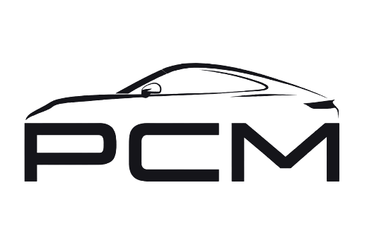

Тракторы PORSCHE‑DIESEL
Малоизвестная глава истории марки: около 120 000 машин, созданных по чертежам Фердинанда Порше
От прототипа 1930‑х до серии Mannesmann
В начале 1930‑х годов Фердинанд Порше разработал прототипы тракторов с V‑образными бензиновыми двигателями воздушного охлаждения. Первый дизельный прототип (модель 113) появился ближе к 1939 году, но война остановила работы.
После войны Порше передал лицензию на производство тракторов сторонним фирмам. Сначала это была немецкая компания Allgaier GmbH, а в Австрии — Hofherr Schrantz. В 1956 году права на производство приобрела группа Mannesmann AG, которая запустила серийное производство на бывшем заводе Zeppelin в немецком Фридрихсхафене.
В 1962 году подразделение Porsche Diesel Motorenbau было приобретено компанией MAN, а в 1963 году производство тракторов прекратилось. Всего за этот период было выпущено около 120 000 машин.
Модели тракторов Porsche
Линейка включала несколько моделей, различавшихся количеством цилиндров двигателя — от одного до четырёх — и мощностью.
{{ m.name }}
{{ m.text }}
{{ m.name }}
{{ m.text }}
{{ expandedModel.name }}
{{ expandedModel.text }}
Особенности конструкции
Тракторы Porsche Diesel выделялись рядом технических решений, опередивших своё время.
{{ f.title }}
{{ f.text }}
{{ f.title }}
{{ f.text }}
PCM — ваш эксперт по Porsche
Сегодня мы занимаемся автомобилями Porsche — продажей и сервисным обслуживанием в Москве.